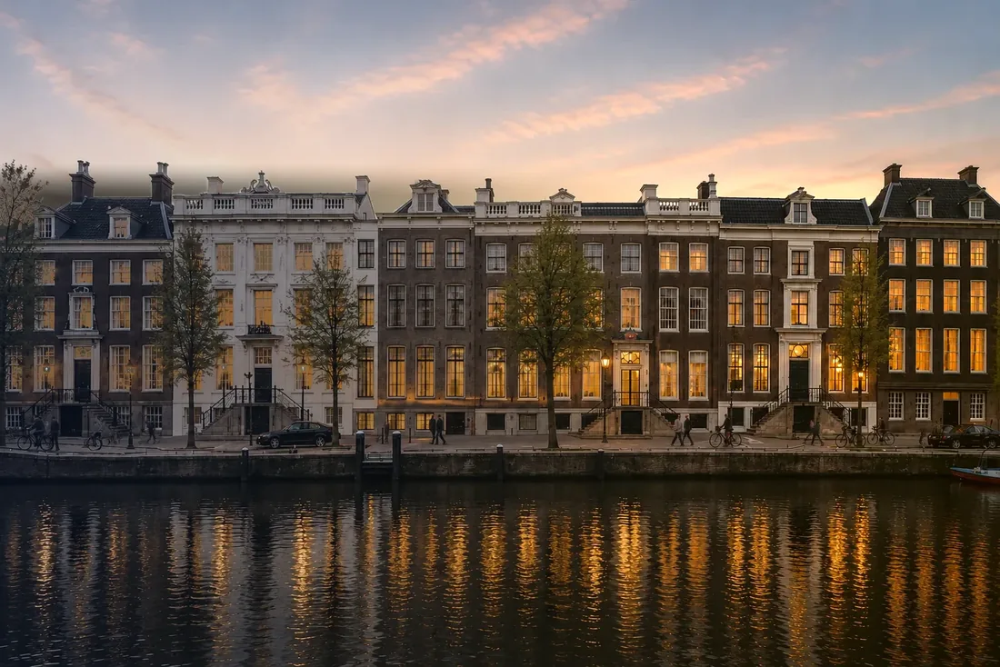

投資対象を、厳選する。
持続的な収益と、自ら管理できる改善余地が、長期保有を支える既存資産。
確かなファンダメンタルズ。明確な潜在力。
自ら見解を形成し、厳格に検証し、擁護しうるものだけを提案します
投資対象の範囲
主にロンドンおよびアムステルダムの都市型資産を対象とし、既存建物、裏付けのある需要、そして具体的で管理可能な改善に基づく事業計画を重視します。いずれも投資家と合意したマンデートに照らして検証し、その承認を得たうえで進めます。
収益型
立地、資産品質、テナント需要に明確な裏付けを持つ持続的な収益
収益型
立地、資産品質、テナント需要に明確な裏付けを持つ持続的な収益
私たちが求めるもの
予測ではなく、実際の稼働で裏付けられた需要
大幅な転用に頼らずとも競争力を保てる建物
収益リスクと必要資本の範囲を見極められること
借換えと売却を支える市場の厚み
機会を見いだす場面
空室、あるいは近い時期の賃貸借の変動
複雑な所有関係や売主側の事情
運用が行き届いていない収益
見せ方や位置づけによって覆われた品質
再生型
建築的な品質と、競争力を高める明確な道筋
再生型
機会を見極める 戦略を描く 資産を強くする資産本来の品質を覆っている空室、位置づけ、運営、資本のいずれの制約かを特定する
競争力を取り戻すために必要な賃貸、建物、運営、資本の打ち手を具体化する
より強い収益と明確な位置づけ、そして確かな保有成果に向けて実行する
立地、資産品質、テナント需要に明確な裏付けを持つ持続的な収益
私たちが求めるもの
予測ではなく、実際の稼働で裏付けられた需要
大幅な転用に頼らずとも競争力を保てる建物
収益リスクと必要資本の範囲を見極められること
借換えと売却を支える市場の厚み
機会を見いだす場面
空室、あるいは近い時期の賃貸借の変動
複雑な所有関係や売主側の事情
運用が行き届いていない収益
見せ方や位置づけによって覆われた品質

機会を見極める 戦略を描く 資産を強くする資産本来の品質を覆っている空室、位置づけ、運営、資本のいずれの制約かを特定する
競争力を取り戻すために必要な賃貸、建物、運営、資本の打ち手を具体化する
より強い収益と明確な位置づけ、そして確かな保有成果に向けて実行する
改善の源泉となりうる要素
賃貸と空室
仕様と建物の状態
用途、レイアウト、位置づけ
運営の成果
資本構成
運営管理と監督
収益型と再生型はしばしば重なります。最も強い機会は、持続的なファンダメンタルズと、具体的に働きかけられる改善の源泉を併せ持ちます

専門的な応用領域
選択的なホスピタリティ
不動産そのもの、地域の需要、運営の構想が互いを高め合う、際立った物件
守るに値する性格
立地に根ざした需要
建物と市場が支えうる運営モデル
私たちが線を引く地点
価格を検討する前に適用します
需要を裏付けられない
改善の源泉が不明確
実行リスクが機会を上回る
出口が限られすぎた買い手層に依存する
下方リスクの範囲を見極められ、改善の源泉に明確に働きかけられる場合にのみ、前に進めます
マンデートのご相談
Reiwa Capitalは、投資家と合意したマンデートを起点に投資を進めます。日本の事業会社、機関投資家、プライベート投資家からのお問い合わせを承ります。